改正透鏡畸變
透鏡畸變是真實透鏡與理想透鏡間的差距， 做法是線性化後改正。 但率定時我一些畸變參數結果為非顯注， 所以 P1 P2 B1 B2 都沒了，剩下 k1 k2 k3 。
主程式
主程式 就用之前作業二的改， 作業二是單純從物空間轉到相空間， 沒有做透鏡畸變改正。 這次就把上次的程式再加上透鏡畸變改正就好了。
函數說明是用 JavaDoc 格式註解。
class ColinearityEquation
constructor: (parameter, interiorOrientalParameter) ->
{c,xp,yp, omega,phi,kappa, xo,yo,zo, k,p} = parameter
@groundToPhotoMatrix = rotateMatrix.wfk omega, phi, kappa
@photoToGroundMatrix = @groundToPhotoMatrix.transpose()
@cameraInSpaceVector = vector.createFromArray [xo,yo,zo]
@cameraToPhotoVector =
interiorOrientalParameter || vector.createFromArray [xp,yp,c]
@k = k || interiorOrientalParameter.k
@p = p || interiorOrientalParameter.p
# 由點相對光軸座標與輻射畸變參數 K ，計算輻射畸變。
# dr = k1*r^3 + k2*r^5 + ...
#
# @parm {vector} point: 相對於光軸的點座標 r 。
# @parm {array} k: 輻射畸變參數組成的陣列 [k1,k2,k3, ... ] 。
# @return {vector} : 輻射畸變的量，一個向量， [dx,dy,0] 。
radialLensDistortion = (point,k) ->
k.reduce(
(distortion, ki, i) ->
# 次方數 = n*2 + 1 ，但陣列從 0 開始。
powern = (i+1) * 2 + 1
# 輻射畸變 += r^n * ki
distortion.add point.power(powern).multiply ki
vector.createFromNumber 0
)
# 由點相對光軸的座標計算偏心畸變的量。
# 找不到向量公式，只好一項項算。
#
# @parm {vector} point: 相對於光軸的點座標 r 。
# @parm {array} p: 由 p1,p2 組成的陣列。
# @return {vector} : 偏心畸變的量，一個向量， [dx,dy,0] 。
decentricLensDistortion = (point,p) ->
x = point[0]
y = point[1]
r = point.norm() # r = 向量長度
[p1,p2] = p
# 偏心畸變的公式， x y 的 p1 p2 是顛倒的。
proc = (p1,p2,x,y,r) -> p1*(r**2 + 2 * x**2) + 2*p2*x*y
# 返回一個向量
vector.createFromArray [
proc p1,p2,x,y,r
proc p2,p1,y,x,r
0
]
# 將地面點 X Y Z 轉到像空間 x y ，計算上用向量計算。
# @param {vector} : 地面點座標
# @return {vector} : 像空間座標
#
# [x y z] = s * M(omega,phi,kappa) * [X Y Z]
# 其中 X Y Z M z 已知， s = z / M * [X Y Z] ，
# 知道 s 即可解得 x y 。
groundToPhoto: (groundPointVector) ->
if ! (groundPointVector instanceof vector.create)
groundPointVector = vector.createFromArray groundPointVector
# 計算 M * [X Y Z] ， [X Y Z] 為相對相機，
# 所以要先減掉相機座標。
unScaleVector = @groundToPhotoMatrix
.multiply groundPointVector.minus @cameraInSpaceVector
# 解 s = z / (M * [X Y Z])(3) ，
# js 陣列從 0 開始。
scale = - @cameraToPhotoVector[2] / unScaleVector[2]
# 解得 s ，即可算 [x y z] 。
photoPoint = unScaleVector
.multiply scale
.add @cameraToPhotoVector
# 計算光軸到點的向量，修正透鏡畸變用。
lensAxisToPoint = photoPoint.minus @cameraToPhotoVector
lensAxisToPoint[2] = 0
# 修正透鏡畸變
photoPoint
.minus radialLensDistortion lensAxisToPoint,@k
.minus decentricLensDistortion lensAxisToPoint,@p
呼叫腳本
然後再寫一個 腳本 ，引用上面的函數， 把所有點從物空間轉到像空間。 可以直接用作業二的，反正幾乎一樣， 在參數多加個透鏡畸變參數就好了。
var ColinearityEquation = require('colinearityEquation')
var vector = require('vector')
// interior oreintal parameter is same for a camera.
var iop = [
0.0419, // xp
-0.0169, // yp
3.9845 // c
]
// 透鏡畸變參數
iop.k = [-6.9954e-03, 7.7051e-04, -7.5490e-51]
iop.p = [0,0]
// 各照片的外方位參數關聯陣列
var eops = {
'IMG_20170329_142042.jpg': { xo:80.3735,yo:98.8612,zo:634.6268,omega:0.0699,phi:-0.1030,kappa:2.8744 },
'IMG_20170329_142058.jpg': { xo:-81.3278,yo:41.9777,zo:565.2236,omega:0.0803,phi:-0.1067,kappa:-0.2924 },
'IMG_20170329_142125.jpg': { xo:-60.7716,yo:54.6448,zo:568.3118,omega:0.0760,phi:-0.0883,kappa:-0.2558 },
'IMG_20170329_142211.jpg': { xo:-63.6876,yo:53.5254,zo:563.7600,omega:0.0823,phi:-0.1150,kappa:-0.2806 },
'IMG_20170329_142226.jpg': { xo:94.7702,yo:70.3780,zo:642.3514,omega:0.0971,phi:-0.1026,kappa:-0.2595 },
'IMG_20170329_142240.jpg': { xo:198.1424,yo:-45.8818,zo:642.4837,omega:0.0804,phi:-0.0992,kappa:-0.2667 },
'IMG_20170329_142246.jpg': { xo:245.7583,yo:99.4521,zo:612.2858,omega:0.1071,phi:-0.1272,kappa:-0.2700 },
'IMG_20170329_142256.jpg': { xo:-26.7946,yo:180.4271,zo:574.0153,omega:0.1017,phi:-0.1120,kappa:-0.2647 },
'IMG_20170329_142310.jpg': { xo:-49.1470,yo:-490.1662,zo:566.5798,omega:0.7712,phi:-0.2354,kappa:-0.1636 },
'IMG_20170329_142320.jpg': { xo:7.0833,yo:-288.2811,zo:415.5978,omega:0.6416,phi:-0.1638,kappa:-1.7378 },
'IMG_20170329_142351.jpg': { xo:350.0767,yo:-173.1544,zo:421.5505,omega:0.4956,phi:0.4160,kappa:0.6646 },
'IMG_20170329_142410.jpg': { xo:388.6816,yo:-154.1689,zo:406.4552,omega:0.4400,phi:0.3880,kappa:-0.9799 },
'IMG_20170329_142420.jpg': { xo:556.9654,yo:4.5911,zo:451.8812,omega:0.2307,phi:0.6087,kappa:1.2424 },
'IMG_20170329_142427.jpg': { xo:500.2165,yo:68.7566,zo:437.8002,omega:0.1262,phi:0.5121,kappa:-0.2832 },
'IMG_20170329_142538.jpg': { xo:489.6227,yo:29.9134,zo:464.3364,omega:0.1353,phi:0.4847,kappa:-0.2866 },
'IMG_20170329_142549.jpg': { xo:497.3857,yo:384.8003,zo:452.6594,omega:-0.4250,phi:0.4969,kappa:2.3210 },
'IMG_20170329_142559.jpg': { xo:482.4185,yo:346.0830,zo:445.1147,omega:-0.2945,phi:0.4102,kappa:0.5590 },
'IMG_20170329_142609.jpg': { xo:209.8006,yo:558.7553,zo:447.6300,omega:-0.6788,phi:0.1314,kappa:2.9426 },
'IMG_20170329_142617.jpg': { xo:194.5429,yo:453.3786,zo:424.2831,omega:-0.4988,phi:0.0898,kappa:1.3428 },
'IMG_20170329_142631.jpg': { xo:-138.6037,yo:472.4225,zo:438.5183,omega:-0.6256,phi:-0.4197,kappa:-2.6275 },
'IMG_20170329_142643.jpg': { xo:-155.7618,yo:455.2740,zo:448.2140,omega:-0.4164,phi:-0.3791,kappa:2.2390 },
'IMG_20170329_142700.jpg': { xo:-397.3214,yo:419.4585,zo:461.9035,omega:-0.4366,phi:-0.6747,kappa:-2.0535 },
'IMG_20170329_142713.jpg': { xo:-171.5418,yo:312.4181,zo:392.4090,omega:-0.3752,phi:-0.6533,kappa:-1.9438 },
'IMG_20170329_142724.jpg': { xo:-209.6607,yo:294.3682,zo:427.5768,omega:-0.3086,phi:-0.4600,kappa:2.8210 },
'IMG_20170329_142739.jpg': { xo:-332.1590,yo:-77.8331,zo:436.8272,omega:0.3233,phi:-0.6313,kappa:-0.9429 },
'IMG_20170329_142744.jpg': { xo:-253.1373,yo:-83.4696,zo:438.5719,omega:0.2580,phi:-0.5070,kappa:-2.4429 }
}
// 所有點的實際座標
var points = {
'WONB48_3': [355.713100, -30.126700, 9.142200],
'WONB5_1': [413.113000, 158.337400, 12.260600],
'WONB5_B1': [414.818600, 166.727400, 12.469900],
'WONB5_B4': [416.544900, 175.095900, 12.559100],
// 中間省略 350 行
'WONB24': [-25.504500, 461.825500, 0.442600],
'WONB24_5': [-32.006300, 456.181700, 0.052400],
'WONB24_B6': [-40.479300, 457.727800, -0.333100],
'WONB24_1': [-24.724600, 473.932000, 0.199500],
'WONB24_B1': [-31.326700, 468.226300, 0.491800],
'2': [-207.297300, 243.371100, -4.281900],
'23': [203.119900, 50.681900, 50.753600],
'44': [40.714900, 208.535200, 45.466700],
'45': [232.145300, 160.338900, 50.847400],
'46': [41.522300, 209.366900, 2.013500],
'47': [234.074900, 161.053800, 6.809200],
'48': [212.677100, 168.701200, 5.967900],
'52': [206.972100, 49.370100, 6.600600]
}
var pointsInPhoto = {}
// photo size
photoSize = [3328, 1872].map(function(s){ return s * 0.0014 / 2 })
// 存放各張照片共線式的關聯陣列
var solvers = {}
for (var i in eops) {
// 初始化每張照片的共線式
solvers[i] = new ColinearityEquation(eops[i], iop)
pointsInPhoto[i] = {}
for (var j in points) {
// 求解該點在像空間座標
var vec = solvers[i].groundToPhoto(points[j])
// 測試該點是否在該照片內
if (
Math.abs(vec[0]) <= photoSize[0] &&
Math.abs(vec[1]) <= photoSize[1]
) {
// 記錄在照片內的點
pointsInPhoto[i][j] = vec
}
}
}
function createIcfTable(data) {
return data
.split(/\n/g)
.map(function (row) {
return row.split(/\s+/g).map(function (s,i) {
if (i == 0) return s
else return Number(s)
})
})
}
// parse icf 檔的函數
function createIcfStructure(data) {
var structure = {}
data.trim().split(/\n/g).map(function(row){
return row.split(/\s+/g)
}).reduce(function(structure, row){
structure[row[0]] = row.slice(1).map(Number)
return structure
},structure)
return structure
}
photoPointError = {}
// 用閉包讀檔
function wrapFileName(filename) {
// function load xxx.icf data
return function whenIcfRead(err, data) {
if (err) throw err
var icfStructure = createIcfStructure(data)
var icf = filename, jpg = filename.replace(/icf$/,'jpg')
var pointsError = {}
// 對在某個 icf 檔內的點測試
for (var point in icfStructure) {
// 若也在相片內則計算兩者差
if (pointsInPhoto[jpg][point]) {
var diff = pointsInPhoto[jpg][point]
.multiply(-1)
.add(icfStructure[point])
// 記錄兩者的差
pointsError[point] = diff
}
}
photoPointError[jpg] = pointsError
}
}
// 實際開始讀檔，讀完資料傳給 wrapFileName(icf) 這個函數。
for (var jpg in pointsInPhoto) {
var icf = jpg.replace(/jpg$/,'icf')
fs.readFile(icf, 'utf8', wrapFileName(icf))
}
// 出輸格式
// pointname x y z dx dy dz
function tableString(jpg) {
var table = []
for (var point in photoPointError[jpg]) {
table.push(
point + '\t' +
pointsInPhoto[jpg][point] + '\t' +
photoPointError[jpg][point]
)
}
return table.join('\n')
}
// output error to file: xxx.err
for (var jpg in pointsInPhoto) {
fs.writeFile(jpg.replace('jpg','err'), tableString(jpg), 'utf8')
}
// 輸出計算完的結果
exports.pe = photoPointError
exports.prip = pointsInPhoto
exports.createIcfStructure = createIcfTable
exports.tableString = tableString
報表分析
從數據來看改正後誤差大概降到 0.01 以下。
| 種類 | 修正透鏡畸變前 | 修正透鏡畸變後 |
|---|---|---|
| 均誤差 x | -0.0025517531 | -0.0001335519 |
| 均誤差 y | 0.0010093639 | 0.0003195241 |
| 均方根誤差 x | 0.0177622041 | 0.0032739178 |
| 均方根誤差 y | 0.0086243741 | 0.0048104195 |
| 最大誤差 x | 0.1218839345 | 0.0890974386 |
| 最大誤差 y | 0.02430216 | 0.0158275895 |
| 最小誤差 x | 2.67811956266174E-06 | 1.79206204264926E-07 |
| 最小誤差 y | 1.6182091860939E-06 | 2.44361238799229E-07 |
誤差向量圖
在畫誤差向量圖時， 因為誤差相對實際座標很小， 所以我畫圖是把誤差乘 10 倍。
改正前的誤差圖
改正後的誤差圖

還是看得出來有一些系統性的誤差在， 也可能是我相機率定沒做好。
所有誤差圖


 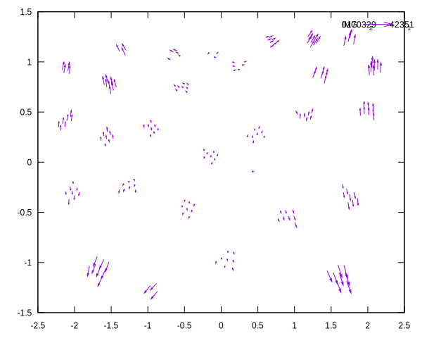
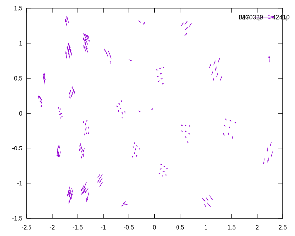
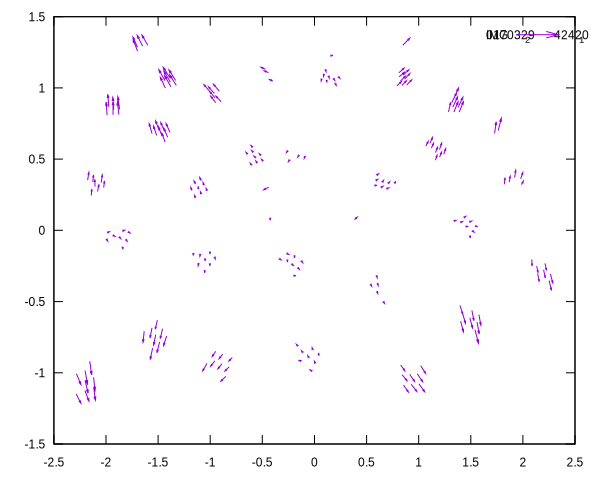
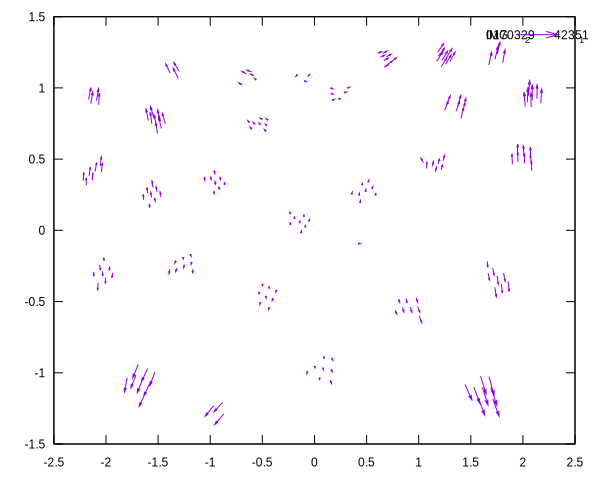
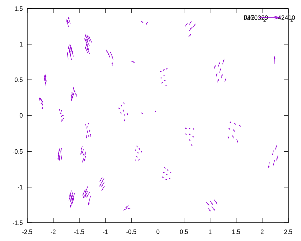
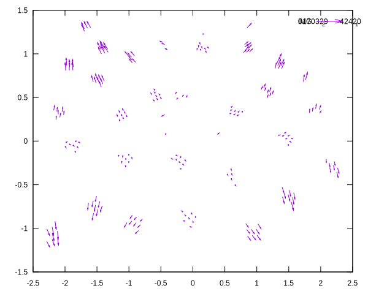
 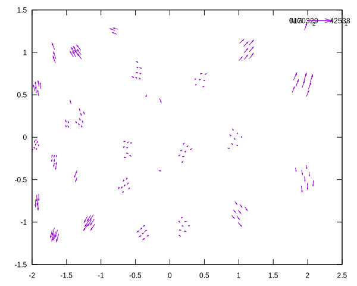
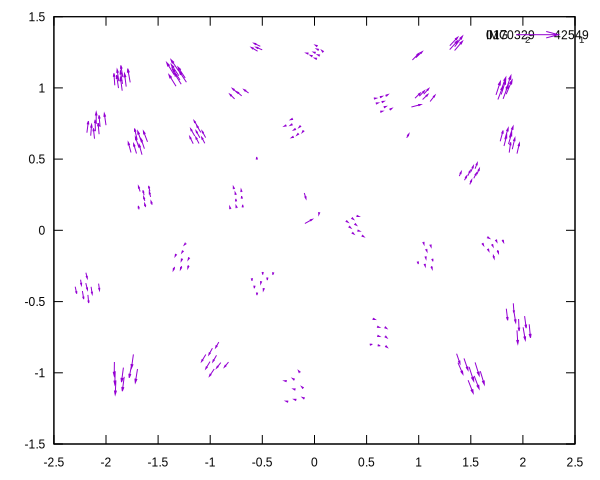
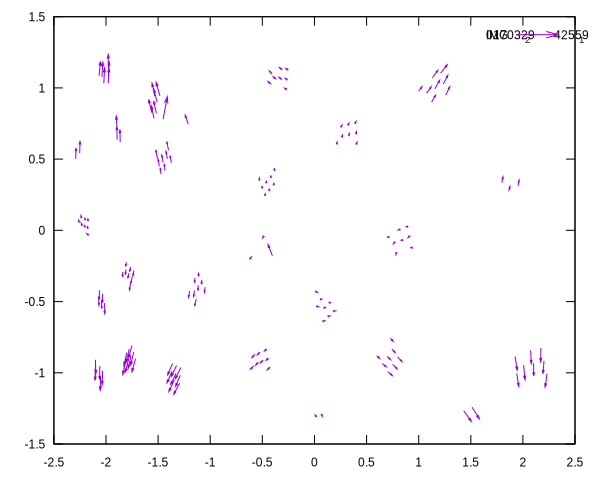
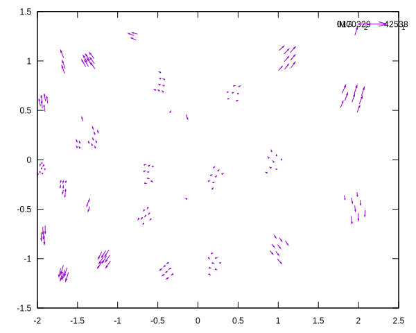
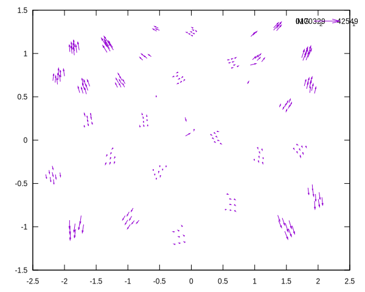
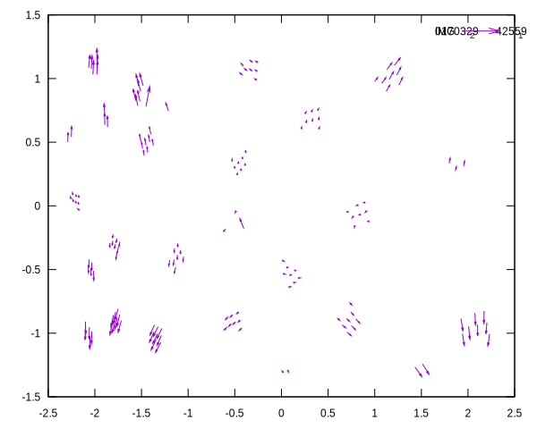


 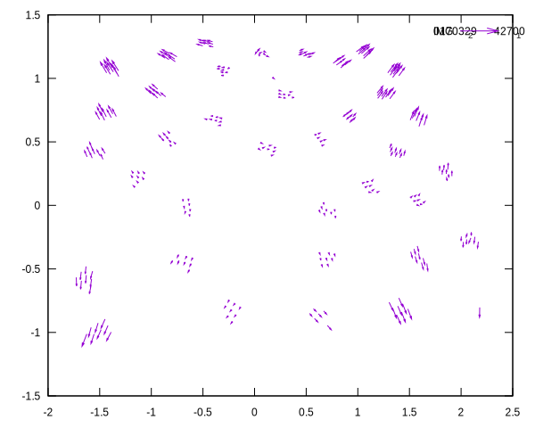
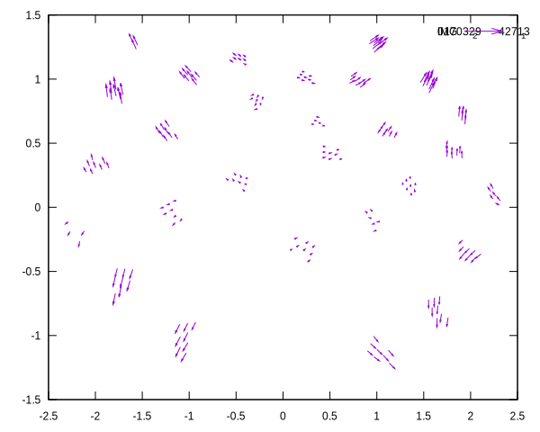
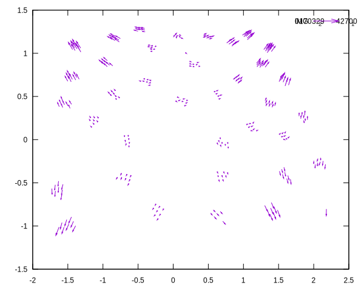
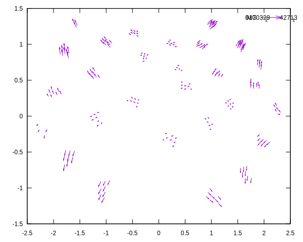